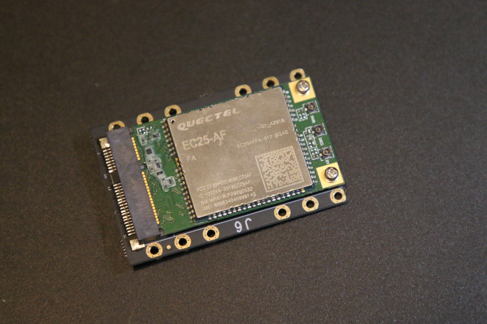
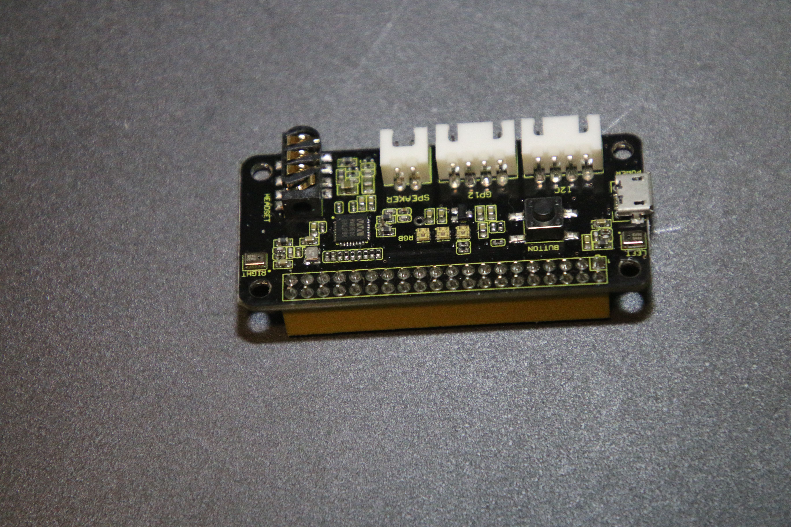
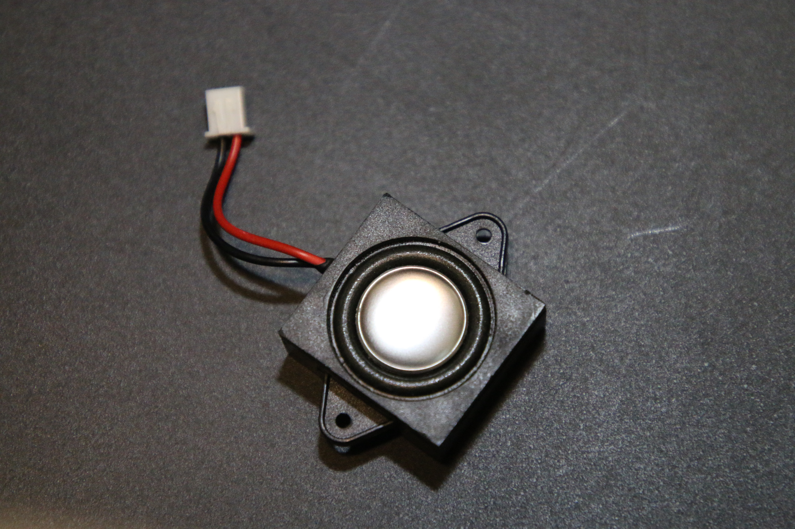

What Is a Raspberry Pi?
A Raspberry Pi is a little computer for big ideas: DIY electronics, IoT monitoring, ham radio experiments, home servers, cameras, speakers, buttons, lights, and practical maker projects.

A Tiny Computer With Real Ports
The short version: a Raspberry Pi is a single-board computer. It has a processor, memory, USB, networking, display output, storage through a microSD card or other media, and GPIO pins that let software talk to the physical world.
It behaves like a real computer
You can install a Linux-based operating system, connect a keyboard and monitor, browse the web, write Python, run servers, manage files, host a dashboard, or automate a task. It is not just a toy board. It is a low-power computer that happens to be friendly to experimenters.
That is why people use Raspberry Pi boards for diy electronics kits for adults. You get a real programming environment and a hands-on hardware playground in one compact package.
It talks to hardware
The GPIO header is the little hack that makes a Raspberry Pi feel magical. With the right wiring, HAT, or adapter, you can connect sensors, buttons, LEDs, relays, speakers, microphones, displays, cameras, and control boards.
A gpio extension board for raspberry pi can make those pins easier to reach, label, protect, and reuse, especially when you are building repeatable diy electronic projects.
What Can You Do With a Raspberry Pi?
A Raspberry Pi is a flexible starting point for learning, automation, and weekend builds. Start simple, then add the accessories that match the project.
Python, Linux, and practical computing
Use it as a small Linux lab for coding, command-line practice, web hosting, scripts, dashboards, and automation. A beginner can blink an LED on day one and still have room to grow into real services and network tools.
Monitor sensors and manage devices
With sensors and networking, a Pi can collect temperature, motion, power, or location data. It can also host dashboards that monitor and control raspberry pi and iot device management projects in a home lab, garage, camper, radio shack, or workshop.
Radio tools and Morse practice
Raspberry Pi boards are useful for logging, decoding, Morse practice, portable dashboards, and station helpers. Builders searching for raspberry pi amatuer radio projects or raspberry pi projects for ham radio can start with simple audio and GPIO experiments before adding radios or keying hardware.
Speakers, microphones, and headphones
Add a small speaker, USB microphone, headphone adapter, or audio HAT and the Pi becomes a compact voice box, sound trigger, radio helper, notification device, or embedded audio player.
Cameras, image libraries, and EXIF workflow
A Pi can capture images, move photos from a camera, run a file server, or organize a photo workflow. When those images move to a desktop, Nerd or Geek also points people to Gledhill Metadata for how to add metadata to photos, how to get metadata from a photo, and how to see metadata of a photo.
Minecraft, NAS, DNS, and dashboards
Run a lightweight server, a small database, DNS, a personal wiki, a Minecraft test server, or a local network dashboard. It is a forgiving way to learn infrastructure without needing a full desktop tower.
The Add-Ons Make It Fun
The board is the starting point. The best Raspberry Pi projects usually come alive when you add one useful part: a cellular module, a speaker, a GPIO board, a button, a light, or a sensor.

Cellular Modems & Hotspots
Add a cellular modem, USB tether, or hotspot and a Raspberry Pi can work away from home Wi-Fi. That is useful for remote sensors, field kits, portable dashboards, and travel projects.

GPIO Extension Boards
A gpio extension board for raspberry pi gives you cleaner access to pins for buttons, LEDs, I2C devices, speaker controls, and small electronics experiments.

Speakers, Mics & Audio
Speakers, microphones, headphones, and audio adapters can turn a Pi into a notification box, radio practice tool, local assistant, or compact media device.
Pi Boards & Kits
Start with a board, then build around it. A practical diy electronic kit can include a Raspberry Pi, power, storage, a case, wires, buttons, lights, and sensors.
Raspberry Pi FAQ
Quick answers for people comparing boards, accessories, and starter ideas.
What is a Raspberry Pi in simple terms?
A Raspberry Pi is a tiny computer on a single circuit board. It can run Linux, connect to a monitor, join a network, run code, and control real electronics through GPIO pins.
Is Raspberry Pi good for diy electronic projects?
Yes. Raspberry Pi boards are excellent for diy electronic projects because they combine software, networking, GPIO, USB devices, cameras, and sensors. They are especially good when a project needs both code and real-world hardware.
What is the difference between a Raspberry Pi and an Arduino?
A Raspberry Pi is a small computer that runs an operating system. An Arduino-style board is usually a microcontroller that runs one program at a time. Use a Raspberry Pi when you need Linux, networking, files, web apps, cameras, or more compute power.
Can I build Raspberry Pi ham radio projects?
Yes. Raspberry Pi projects for ham radio can include Morse practice, logging, dashboards, audio processing, digital mode helpers, and portable station utilities. The phrase raspberry pi amatuer radio projects shows up often because people search both the correct spelling and the common typo while looking for radio builds.
Can a Raspberry Pi become a hotspot or use cellular internet?
Yes, depending on the hardware. You can connect a USB cellular modem, tether to a phone or hotspot, or use a cellular module with the right adapter and software. That makes the Pi useful for field sensors, portable networks, and remote monitoring.